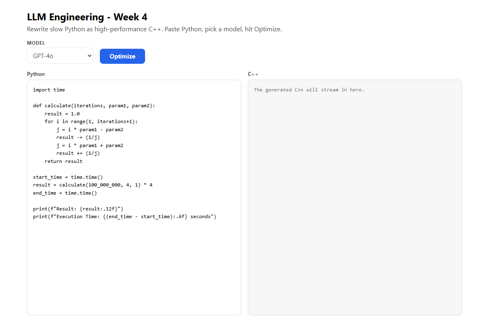

Week 4 · Day 3 — Code Generation: Python to Fast C++
Use GPT-4o and Claude 3.5 to rewrite slow Python as high-performance C++ (speedups of thousands of times), with a Gradio UI in Python and a React UI in TypeScript.
Companion to Ed Donner's course · uv setup · Python + TypeScript/React · code verified against the repoThis is the first real coding day of Week 4, and the instructor calls it "a business project that adds real commercial value." The job: take slow Python and have a frontier model rewrite it as high-performance C++ that produces the same output in a tiny fraction of the time. This is code generation put to work: you are not asking a model to write an app from scratch, you are asking it to port and optimise code you already have.
Today uses two closed-source models and pits them against each other: GPT-4o and Claude 3.5 Sonnet. You give each the same system prompt ("produce C++ with identical output, as fast as possible"), stream the C++ back as it is written, then compile and time it against the original Python. The instructor reports speedups up to around 13,000x on a hard problem (more on that number below). The lab wraps everything in a small two-pane user interface: a Gradio app in Python, and a React version in the TypeScript port (served by a tiny Hono API).
As on every day, the lab is shown in both languages. The course is in Python; this guide ships a TypeScript port. Use the Code in: switch at the top of the page (or the Python | TypeScript tabs on the code card) to choose; the whole page follows your choice.
The concepts the instructor introduces
Four ideas carry the day. Code generation: using an LLM to produce source code rather than prose. Why C++ beats Python here: Python runs line by line through an interpreter, while C++ is compiled straight to native machine code and tuned by the compiler. Streaming: the model's answer is printed piece by piece as it arrives, so you watch the C++ appear. And comparing models: giving two models the exact same task is a fair, practical way to judge which one is better at a job — here the instructor leans on the coding leaderboards (Claude 3.5 Sonnet sits at the top of the SEAL coding leaderboard, GPT-4o just behind).
New to "code generation"? What it is and why it matters
Code generation is asking a language model to write code instead of ordinary text. It is one of the most useful things frontier models do, because code is highly structured and the models have seen enormous amounts of it in training. The task can be "write a function that does X", but it can also be translation — take working code in one language and produce equivalent code in another. That is exactly today's job: port Python to C++.
The clever twist is in the instruction. The prompt does not say "translate line by line"; it says "produce identical output in the fastest possible time". That gives the model freedom to rethink the algorithm, not just rewrite the syntax — which, as you will see, is how Claude sometimes achieves its most dramatic speedups.
New to this? Why C++ runs so much faster than Python
Python is an interpreted language: when you run a Python program, an interpreter reads and executes it one statement at a time, checking types and looking things up as it goes. That flexibility is wonderful for writing code quickly, but it adds overhead to every single operation. A loop that runs 200 million times pays that overhead 200 million times.
C++ is a compiled language: before it runs, a compiler turns the whole program into native machine code tailored to your processor, and it can apply aggressive optimisations (using CPU registers, removing redundant work, vectorising loops). The result runs with almost no per-operation overhead. For tight numerical loops like today's, compiled C++ is routinely 10x–100x faster than Python — and far more than that when the model also finds a smarter algorithm.
New to "streaming"? What it is and why the lab uses it
Streaming means the model sends its answer back in small pieces (chunks) as it generates them, instead of making you wait for the whole thing. You have seen it in a chat UI where the text types itself out. In code you switch it on and then loop over the chunks as they arrive.
In Python the OpenAI call takes stream=True and you iterate
chunk.choices[0].delta.content; Claude uses client.messages.stream(...). In the
TypeScript port you see both: for await (const chunk of stream) for OpenAI and a
content_block_delta event for Anthropic. Streaming matters here because generating a full C++
file can take many seconds, and watching it appear is far nicer than staring at a frozen screen.
New to the idea of "comparing models"? Why run the same task twice
Benchmarks and leaderboards give you a general sense of which models are strong at coding, but the most convincing test is your own: give two models the identical prompt on your real problem and compare the results. That is what today does — the same system prompt, the same Python, once through GPT-4o and once through Claude 3.5 Sonnet — then compile both and time them.
The instructor's finding: on the simple problem both models do well and run at about the same speed. On a harder problem GPT-4o sometimes produces C++ that compiles but gives the wrong answer (a number overflow), while Claude not only gets it right but occasionally rewrites the algorithm entirely for a breathtaking speedup. Comparing on your own task surfaces differences a leaderboard number never would.
What you will do
You set up two client connections (OpenAI and Anthropic), write a system prompt and a user prompt, send
some slow Python, stream the C++ answer back, write it to main.cpp, then compile and run it to
measure the speedup. The running example is a slowly-converging series for pi that loops hundreds of millions
of times.
- Python From the
llm_engineeringproject folder, start JupyterLab withuv run jupyter lab, or open the notebook in your editor and select the project.venv(Python 3.12) as the kernel. - Keys This lab uses two providers. Confirm your
.envin the project root hasOPENAI_API_KEY=sk-proj-...andANTHROPIC_API_KEY=.... - A C++ compiler You need one installed (the video uses
clang++on an M1 Mac). A quick search for your operating system tells you how; on a Mac, opening Xcode once installs the command-line tools. - Open the notebook Open
week4/day3.ipynband run the cells from the top: imports, client setup, the prompts, the port function, then the compile-and-time cells. - TypeScript The port lives in
code/ts/w4/optimize.ts(and the full React app inweek4-ts/). Install once withnpm install, then run it withtsx.
The full program
Here is the complete file in both languages. The Python file is the Week 4 Day 3 notebook (the repo's current version, which compares four models). The TypeScript file is the reusable core the React app calls: it streams a C++ port of some Python from either GPT-4o or Claude. Pick a language, read it once end to end, then use the line-by-line tables underneath.
# imports
import os
from dotenv import load_dotenv
from openai import OpenAI
import subprocess
from IPython.display import Markdown, display
load_dotenv(override=True)
openai_api_key = os.getenv('OPENAI_API_KEY')
anthropic_api_key = os.getenv('ANTHROPIC_API_KEY')
google_api_key = os.getenv('GOOGLE_API_KEY')
grok_api_key = os.getenv('GROK_API_KEY')
if openai_api_key:
print(f"OpenAI API Key exists and begins {openai_api_key[:8]}")
else:
print("OpenAI API Key not set")
if anthropic_api_key:
print(f"Anthropic API Key exists and begins {anthropic_api_key[:7]}")
else:
print("Anthropic API Key not set (and this is optional)")
if google_api_key:
print(f"Google API Key exists and begins {google_api_key[:2]}")
else:
print("Google API Key not set (and this is optional)")
if grok_api_key:
print(f"Grok API Key exists and begins {grok_api_key[:4]}")
else:
print("Grok API Key not set (and this is optional)")
# Connect to client libraries
openai = OpenAI()
anthropic_url = "https://api.anthropic.com/v1/"
gemini_url = "https://generativelanguage.googleapis.com/v1beta/openai/"
grok_url = "https://api.x.ai/v1"
anthropic = OpenAI(api_key=anthropic_api_key, base_url=anthropic_url)
gemini = OpenAI(api_key=google_api_key, base_url=gemini_url)
grok = OpenAI(api_key=grok_api_key, base_url=grok_url)
OPENAI_MODEL = "gpt-4o-mini-sol"
CLAUDE_MODEL = "claude-3-5-sonnet-20240620"
GROK_MODEL = "grok-4.3"
GEMINI_MODEL = "gemini-4-argon"
# Want to keep costs ultra-low? Uncomment these lines:
# OPENAI_MODEL = "gpt-4o-mini"
# CLAUDE_MODEL = "claude-3-haiku-20240307"
# GROK_MODEL = "grok-4-fast-non-reasoning"
# GEMINI_MODEL = "gemini-2.0-flash"
from system_info import retrieve_system_info
system_info = retrieve_system_info()
system_info
message = f"""
Here is a report of the system information for my computer.
I want to run a C++ compiler to compile a single C++ file called main.cpp and then execute it in the simplest way possible.
Please reply with whether I need to install any C++ compiler to do this. If so, please provide the simplest step by step instructions to do so.
If I'm already set up to compile C++ code, then I'd like to run something like this in Python to compile and execute the code:
```python
compile_command = # something here - to achieve the fastest possible runtime performance
compile_result = subprocess.run(compile_command, check=True, text=True, capture_output=True)
run_command = # something here
run_result = subprocess.run(run_command, check=True, text=True, capture_output=True)
return run_result.stdout
```
Please tell me exactly what I should use for the compile_command and run_command.
System information:
{system_info}
"""
response = openai.chat.completions.create(model=OPENAI_MODEL, messages=[{"role": "user", "content": message}])
display(Markdown(response.choices[0].message.content))
compile_command = ["clang++", "-std=c++17", "-Ofast", "-mcpu=native", "-flto=thin", "-fvisibility=hidden", "-DNDEBUG", "main.cpp", "-o", "main"]
run_command = ["./main"]
system_prompt = """
Your task is to convert Python code into high performance C++ code.
Respond only with C++ code. Do not provide any explanation other than occasional comments.
The C++ response needs to produce an identical output in the fastest possible time.
"""
def user_prompt_for(python):
return f"""
Port this Python code to C++ with the fastest possible implementation that produces identical output in the least time.
The system information is:
{system_info}
Your response will be written to a file called main.cpp and then compiled and executed; the compilation command is:
{compile_command}
Respond only with C++ code.
Python code to port:
```python
{python}
```
"""
def messages_for(python):
return [
{"role": "system", "content": system_prompt},
{"role": "user", "content": user_prompt_for(python)}
]
def write_output(cpp):
with open("main.cpp", "w", encoding="utf-8") as f:
f.write(cpp)
def port(client, model, python):
response = client.chat.completions.create(model=model, messages=messages_for(python))
reply = response.choices[0].message.content
reply = reply.replace('```cpp','').replace('```','')
write_output(reply)
pi = """
import time
def calculate(iterations, param1, param2):
result = 1.0
for i in range(1, iterations+1):
j = i * param1 - param2
result -= (1/j)
j = i * param1 + param2
result += (1/j)
return result
start_time = time.time()
result = calculate(200_000_000, 4, 1) * 4
end_time = time.time()
print(f"Result: {result:.12f}")
print(f"Execution Time: {(end_time - start_time):.6f} seconds")
"""
def run_python(code):
globals = {"__builtins__": __builtins__}
exec(code, globals)
run_python(pi)
port(openai, OPENAI_MODEL, pi)
# Use the commands from GPT-4o mini
def compile_and_run():
subprocess.run(compile_command, check=True, text=True, capture_output=True)
print(subprocess.run(run_command, check=True, text=True, capture_output=True).stdout)
print(subprocess.run(run_command, check=True, text=True, capture_output=True).stdout)
print(subprocess.run(run_command, check=True, text=True, capture_output=True).stdout)
compile_and_run()
19.178207/0.082168
port(anthropic, CLAUDE_MODEL, pi)
compile_and_run()
port(grok, GROK_MODEL, pi)
compile_and_run()
port(gemini, GEMINI_MODEL, pi)
compile_and_run()
print(f"""
In Ed's experiments, the performance speedups were:
4th place: Claude Sonnet 4.5: {19.178207/0.104241:.0f}X speedup
3rd place: GPT-5: {19.178207/0.082168:.0f}X speedup
2nd place: Grok 4: {19.178207/0.018092:.0f}X speedup
1st place: Gemini 2.5 Pro: {19.178207/0.013314:.0f}X speedup
""")// Week 4 - Code generation (TypeScript port of day3.py / day4.py)
// Send slow Python to a frontier model and ask for a high-performance C++ rewrite,
// streaming the C++ back as it is generated.
// - GPT-4o via the openai client library
// - Claude via the native @anthropic-ai/sdk (claude-3-5-sonnet-20240620)
//
// The original lab also compiled + ran the C++ to compare speed against Python; that part
// is machine-specific (it shells out to clang++), so here we focus on the model-driven port,
// which is the reusable core the UI calls.
//
// Run with: npm run optimize (needs the key for the chosen model; see .env.example)
import "dotenv/config";
import { pathToFileURL } from "node:url";
import OpenAI from "openai";
import Anthropic from "@anthropic-ai/sdk";
// Video-era model ids (the lab pins these for reproducible results).
export const GPT_MODEL = "gpt-4o";
export const CLAUDE_MODEL = "claude-3-5-sonnet-20240620";
// The UI dropdown picks one of these.
export type Model = "gpt-4o" | "claude";
// A representative compile command, handed to the model so it tunes the C++ for it.
// (The lab targets the fastest possible runtime with aggressive optimisation flags.)
const COMPILE_COMMAND =
"clang++ -std=c++17 -O3 -march=native -DNDEBUG main.cpp -o main";
// Same instruction the Python lab uses: C++ only, identical output, fastest time.
export const SYSTEM_PROMPT =
"Your task is to convert Python code into high performance C++ code. " +
"Respond only with C++ code. Do not provide any explanation other than occasional comments. " +
"The C++ response needs to produce an identical output in the fastest possible time.";
export function userPromptFor(python: string): string {
return (
"Port this Python code to C++ with the fastest possible implementation that produces " +
"identical output in the least time. Pay attention to integer and floating-point types " +
"to make sure the results match, and watch for overflow.\n" +
"Your response will be written to a file called main.cpp and then compiled and executed; " +
`the compilation command is:\n${COMPILE_COMMAND}\n` +
"Respond only with C++ code. Do not wrap it in markdown fences.\n\n" +
"Python code to port:\n\n" +
"```python\n" +
python +
"\n```\n"
);
}
// --- clients (built lazily so the module imports fine with no keys) ------------
function hasKeyFor(model: Model): boolean {
return model === "gpt-4o" ? !!process.env.OPENAI_API_KEY : !!process.env.ANTHROPIC_API_KEY;
}
// A clear error the server turns into a 400 and the CLI prints.
export class MissingKeyError extends Error {
constructor(public readonly model: Model) {
super(
model === "gpt-4o"
? "OPENAI_API_KEY is not set"
: "ANTHROPIC_API_KEY is not set",
);
this.name = "MissingKeyError";
}
}
// Strip stray markdown code fences the model may still emit, mirroring the Python
// `reply.replace('```cpp','').replace('```','')` cleanup.
export function stripCodeFences(text: string): string {
return text.replace(/```(?:cpp|c\+\+)?/gi, "");
}
// --- the core: stream a C++ port of the given Python -------------------------
// Yields chunks of C++ as they arrive, mirroring the Gradio `yield` loop.
export async function* optimizePython(python: string, model: Model): AsyncGenerator<string> {
if (!hasKeyFor(model)) throw new MissingKeyError(model);
if (model === "gpt-4o") {
const openai = new OpenAI(); // reads OPENAI_API_KEY
const stream = await openai.chat.completions.create({
model: GPT_MODEL,
messages: [
{ role: "system", content: SYSTEM_PROMPT },
{ role: "user", content: userPromptFor(python) },
],
stream: true,
});
for await (const chunk of stream) {
const delta = chunk.choices[0]?.delta.content ?? "";
if (delta) yield delta;
}
} else {
const anthropic = new Anthropic(); // reads ANTHROPIC_API_KEY
const stream = anthropic.messages.stream({
model: CLAUDE_MODEL,
max_tokens: 2000,
system: SYSTEM_PROMPT,
messages: [{ role: "user", content: userPromptFor(python) }],
});
for await (const event of stream) {
if (
event.type === "content_block_delta" &&
event.delta.type === "text_delta"
) {
yield event.delta.text;
}
}
}
}
// Convenience: collect the whole (fence-stripped) C++ port.
export async function optimizePythonToString(python: string, model: Model): Promise<string> {
let out = "";
for await (const chunk of optimizePython(python, model)) out += chunk;
return stripCodeFences(out);
}
// --- CLI entry point ----------------------------------------------------------
// A slow pi-calculation in Python (the lab's running example).
const SAMPLE_PYTHON = `import time
def calculate(iterations, param1, param2):
result = 1.0
for i in range(1, iterations+1):
j = i * param1 - param2
result -= (1/j)
j = i * param1 + param2
result += (1/j)
return result
start_time = time.time()
result = calculate(100_000_000, 4, 1) * 4
end_time = time.time()
print(f"Result: {result:.12f}")
print(f"Execution Time: {(end_time - start_time):.6f} seconds")
`;
async function main(): Promise<void> {
const model = (process.argv[2] as Model) ?? "gpt-4o";
if (model !== "gpt-4o" && model !== "claude") {
console.log('Usage: npm run optimize -- [gpt-4o|claude]');
return;
}
if (!hasKeyFor(model)) {
console.log(
`${new MissingKeyError(model).message} - this demo needs it. See .env.example.`,
);
return;
}
console.log(`Optimising the sample Python with ${model}...\n`);
for await (const chunk of optimizePython(SAMPLE_PYTHON, model)) {
process.stdout.write(chunk);
}
process.stdout.write("\n");
}
// Only run when invoked directly (so the file is safe to import for its helpers).
if (import.meta.url === pathToFileURL(process.argv[1] ?? "").href) {
main().catch((err) => {
console.error(err);
process.exitCode = 1;
});
}Line by line
Imports, keys and clients (lines 1–57). Lines 3–7 import os,
load_dotenv, the OpenAI client, subprocess (to run the compiler) and
Jupyter's Markdown/display. Lines 9–33 load the .env and print a
short confirmation for each key (OpenAI required; Anthropic, Google and Grok optional). Line 37 creates the
OpenAI client, and lines 39–45 create three more OpenAI-compatible clients by pointing the same
class at other providers' base URLs. Lines 47–57 set the model ids.
| Line(s) | Code | What it does & why |
|---|---|---|
| 37 | openai = OpenAI() | The OpenAI client; it reads OPENAI_API_KEY from the environment automatically. |
| 43 | anthropic = OpenAI(api_key=anthropic_api_key, base_url=anthropic_url) | Talks to Claude through Anthropic's OpenAI-compatible endpoint, so the same call shape works. (The video used Anthropic's native SDK; the repo now routes Claude through this compatible client.) |
| 47–50 | OPENAI_MODEL = "gpt-4o-mini-sol" … CLAUDE_MODEL = "claude-3-5-sonnet-20240620" | The model ids the repo snapshot uses. Note: the video uses gpt-4o and claude-3-5-sonnet-20240620; the repo has moved GPT and added Grok and Gemini. See the Video-vs-repo callout. |
| 52–57 | # OPENAI_MODEL = "gpt-4o-mini" … | Commented-out cheaper ids. Uncomment these to keep costs ultra-low while experimenting. |
Asking the model how to compile, then fixing the compile command (lines 59–88). This is a repo addition: it sends your machine's details to the model and asks for the exact compile command.
| Line(s) | Code | What it does & why |
|---|---|---|
| 59–62 | from system_info import retrieve_system_info | Reads a short report of your computer (OS, CPU) so the prompt can be tailored to it. The video hard-coded "for an M1 Mac"; the repo detects it. |
| 64–84 | message = f"""…""" then openai.chat.completions.create(...) | Asks the model, in plain English, whether you need a compiler and exactly what compile_command and run_command to use for the fastest runtime. The reply is shown as Markdown. A one-off convenience, not part of the core loop. |
| 87 | compile_command = ["clang++", "-std=c++17", "-Ofast", "-mcpu=native", "-flto=thin", …] | The compile command as a list of arguments. The flags ask for maximum optimisation: -Ofast (aggressive speed), -mcpu=native (tune for this exact CPU), -flto=thin (link-time optimisation). These flags are why the compiled code is so fast. |
| 88 | run_command = ["./main"] | How to run the compiled program afterwards. |
The system prompt and the user prompt — the heart of the lab.
| Line(s) | Code | What it does & why |
|---|---|---|
| 90–94 | system_prompt = """Your task is to convert Python code into high performance C++ code. …""" | The fixed instruction: respond only with C++, comments sparingly, no explanation, and the output must be identical in the fastest possible time. This single sentence is what drives the whole project. |
| 96–109 | def user_prompt_for(python): | Builds the per-request prompt. It repeats the "fastest possible, identical output" goal, pastes in the machine's system_info and the compile_command (so the model tunes the C++ for them), says the code will be written to main.cpp, and then includes the Python to port inside a fenced block. |
| 111–115 | def messages_for(python): | Assembles the two-message list you know well: one role: "system" message (the system prompt) and one role: "user" message (the user prompt). |
Writing the C++ to disk, and the port function that calls the model.
| Line(s) | Code | What it does & why |
|---|---|---|
| 118–120 | def write_output(cpp): | Saves the C++ text to main.cpp (UTF-8). The compiler reads this file next. |
| 122 | def port(client, model, python): | The core function. Given any of the clients, a model id and some Python, it produces and saves a C++ port. (The repo adds a reasoning_effort argument here that the video-era code did not have — see the Video-vs-repo callout.) |
| 123 | response = client.chat.completions.create(model=model, messages=messages_for(python), reasoning_effort=reasoning_effort) | Sends the two-message list to the chosen model. In the video this call used stream=True and the C++ was printed chunk by chunk; the TypeScript tab keeps that streaming form. |
| 124–125 | reply = response.choices[0].message.content / reply = reply.replace('```cpp','').replace('```','') | Reads the model's text, then strips the Markdown code fences models like to add around code, leaving clean C++. |
| 126 | write_output(reply) | Saves the cleaned C++ to main.cpp. |
The slow Python example, and the compile-and-time cells (summarised).
| Line(s) | Code | What it does & why |
|---|---|---|
| 128–146 | pi = """…""" | The running example as a Python string: a loop that runs 200 million times to converge slowly on pi, timing itself and printing the result. It is slow on purpose — that is what we want C++ to beat. |
| 148–152 | def run_python(code): / exec(code, globals) | Runs that Python string with exec. The instructor warns you should always be suspicious of exec (it runs arbitrary code); here the string is visible and harmless. This gives the Python baseline time. |
| 154 | port(openai, OPENAI_MODEL, pi) | Asks GPT to port the pi code; the C++ lands in main.cpp. |
| 158–164 | def compile_and_run(): | Uses subprocess.run to compile main.cpp with the optimised flags, then runs the program a few times and prints its output (so you see the result and the C++ runtime). |
| 166 | 19.178207/0.082168 | A bare division cell: the Python time divided by the C++ time, i.e. the speedup for this run. |
| 168–175 | port(anthropic, CLAUDE_MODEL, pi) … port(gemini, GEMINI_MODEL, pi) | The same port-then-compile dance for Claude, Grok and Gemini, so all four can be compared on one problem. |
| 178–185 | print(f"""In Ed's experiments, the performance speedups were: …""") | Prints a ranking of the four models by speedup for the pi problem (computed from the recorded times). These are the repo's numbers for the simple problem; the dramatic ~13,000x figure comes from the video's hard problem — see the callouts. |
Line by line
The TypeScript port is the reusable core the React app calls: it streams a C++ port of some Python from
either GPT-4o or Claude. It shows the video-era model ids (gpt-4o,
claude-3-5-sonnet-20240620) and uses Anthropic's native SDK for Claude.
| Line(s) | Code | What it does & why |
|---|---|---|
| 12 | import "dotenv/config"; | Loads the .env file as the program starts, so the API keys are available. The Node twin of Python's load_dotenv(). |
| 13–15 | import { pathToFileURL } … / import OpenAI … / import Anthropic … | A Node helper used at the bottom to detect "run directly", the official OpenAI client, and Anthropic's native SDK for Claude. |
| 18–19 | export const GPT_MODEL = "gpt-4o"; / CLAUDE_MODEL = "claude-3-5-sonnet-20240620"; | The two model ids as named constants — the video's ids, pinned for reproducible results. Easy to swap when a model is retired. |
| 22 | export type Model = "gpt-4o" | "claude"; | A tiny type listing the two choices the UI dropdown offers. TypeScript will reject any other value at compile time. |
| 26–27 | const COMPILE_COMMAND = "clang++ -std=c++17 -O3 -march=native -DNDEBUG main.cpp -o main"; | A representative compile command, handed to the model so it tunes the C++ for aggressive optimisation (-O3, -march=native). |
| 30–33 | export const SYSTEM_PROMPT = "Your task is to convert Python code into high performance C++ code. …"; | The same instruction as the Python lab: C++ only, occasional comments, identical output in the fastest possible time. |
| 35–48 | export function userPromptFor(python: string): string | Builds the per-request prompt: restate the goal, warn about integer/float types and overflow, give the compile command, say "no markdown fences", and paste the Python inside a fenced block. |
| 51–53 | function hasKeyFor(model: Model): boolean | Checks the right environment variable is set for the chosen model (OPENAI_API_KEY or ANTHROPIC_API_KEY) before any call is attempted. |
| 56–65 | export class MissingKeyError extends Error | A clear, typed error the server turns into a 400 and the CLI prints, so a missing key gives a readable message instead of a crash. |
| 69–71 | export function stripCodeFences(text: string): string | Removes stray Markdown code fences the model may still emit — the twin of Python's reply.replace('```cpp','').replace('```',''). |
| 75–76 | export async function* optimizePython(python, model): AsyncGenerator<string> / if (!hasKeyFor(model)) throw new MissingKeyError(model); | The core: an async generator that yields C++ chunks as they stream in, mirroring the Gradio yield loop. It fails fast if the key is missing. |
| 78–91 | if (model === "gpt-4o") { … openai.chat.completions.create({ … stream: true }) … } | The GPT branch: build the client, make a streaming chat call with the system and user messages, then for await (const chunk of stream) yield each delta.content as it arrives. |
| 92–108 | } else { … anthropic.messages.stream({ … }) … } | The Claude branch, using Anthropic's native SDK. Claude takes the system text separately and needs max_tokens; the loop yields event.delta.text on each content_block_delta text event. |
| 112–116 | export async function optimizePythonToString(python, model): Promise<string> | A convenience that drains the generator into one string and strips any leftover fences — handy when you want the whole C++ at once rather than streamed. |
| 120–137 | const SAMPLE_PYTHON = `…`; | The same slow pi-calculation example as the Python lab, as a template string (100 million iterations here). |
| 139–156 | async function main(): Promise<void> | A small CLI runner: read the model from the command line, print a clear message and exit if the model is unknown or the key is missing, otherwise stream the C++ port to the terminal. |
| 159–164 | if (import.meta.url === pathToFileURL(process.argv[1] ?? "").href) { main()… } | Runs main() only when the file is launched directly, not when the React API imports optimizePython. The .catch prints any error and sets a non-zero exit code. |

Run the pi example in Python and it takes several seconds (the video's run was about 8.5s for 100 million terms, longer for 200 million). Ask GPT to port it, and C++ streams into view; compile and run it and the same answer comes back in a fraction of a second — the video measured roughly 0.2s, "somewhere between 10 and 100 times faster". Claude's C++ runs at about the same speed on this simple problem.
On the harder "maximum subarray sum" problem the difference is dramatic: the instructor reports Claude rewriting the nested loop into a single-pass algorithm and finishing in about two milliseconds against Python's ~27 seconds — which he works out to roughly 13,000x faster. (That figure is from the course; this guide did not measure it.)
- Fast but wrong. A model can produce C++ that compiles and runs quickly yet gives the wrong answer — in the video GPT-4o hit an integer overflow on the hard problem and returned 0. Always compare the C++ output against the Python output before you trust any speedup.
- Compiler flags and setup. You need a C++ compiler installed, and the compile command's
flags are machine-specific.
-mcpu=native/-march=nativetune for your CPU; the exact flags that work differ by compiler and operating system. A quick search for your platform tells you what to use. - Prompt hints matter. The instructor found GPT needed extra wording ("pay attention to number types to avoid overflow", "include all necessary packages") that Claude did not. If the generated code breaks, a more directive prompt often fixes it.
- Never share the Gradio app. The UI can run arbitrary Python and C++ on your machine via
execandsubprocess. Keep Gradio'sshareset to false — this prototype is for you only. - Not run live here. The API-calling code is shown exactly as in the course; it was
not run live in this guide (that needs paid OpenAI and Anthropic keys). The TypeScript project
type-checks and
vite buildsucceeds, and the script runs offline via its missing-key guard, but the live model calls were not made here.
- Model ids. The video uses
gpt-4oandclaude-3-5-sonnet-20240620(the two top coding models at the time). The embedded Python file is the repo's current snapshot: it has moved GPT to a newer id and also added Grok and Gemini to the comparison. The TypeScript tab keeps the video'sgpt-4o/claude-3-5-sonnet-20240620so the lesson matches the video. Treat any model id as a value you swap for whatever is current when you run it. - The
reasoning_effortparameter. The repo'sport()passesreasoning_effort=reasoning_effortinto the chat call — a parameter the video-era code did not have. It controls how much a reasoning model "thinks" before answering; it is valid, newer code. - Streaming and the Claude SDK. In the video the port used
stream=Trueand printed the C++ chunk by chunk, with Claude called through Anthropic's native SDK (system message passed separately, amax_tokenslimit). The embedded Python routes Claude through an OpenAI-compatible client instead; the TypeScript tab keeps the streaming form and the native Anthropic SDK. - Structure. The video wrapped two functions (
optimize_gpt,optimize_claude) in a Gradiogr.BlocksUI. The repo file refactors to oneport()that works for any client, asks the model for the compile command, and ranks four models by speedup. - The 13,000x figure. That dramatic number is the video's result on the hard maximum-subarray problem. The embedded file's pi-problem ranking shows more modest speedups — expected, because the simple pi loop has less room to gain than an algorithm Claude can rewrite.
A React version
The TypeScript port also ships as a small React app in week4-ts/: a two-pane screen (Python on
the left, generated C++ on the right) with a model dropdown and an Optimize button, served by a tiny
REST API built with Hono. The browser sends the Python and
the chosen model to POST /api/optimize; the server calls optimizePython from the
file above and streams the C++ back to the page. The screenshot above shows the shell — a real run needs
an API key.
Build it step by step
Beyond reading the finished file, here is how to build the optimizer from an empty folder. Pick your stack with the tabs below.
- In a new or existing project, add the packages this lab needs:
uv add openai anthropic python-dotenv gradioopenaiandanthropicare the client libraries,python-dotenvreads.env, andgradiobuilds the UI. - Put both keys in
.envin the project root:OPENAI_API_KEY=sk-proj-...andANTHROPIC_API_KEY=.... - Install a C++ compiler for your system (the video uses
clang++); confirm it works from a terminal. - Create the notebook or script with the pieces above: the clients, the
system_promptanduser_prompt_for,messages_for,write_outputandport. - Add the slow
pistring andrun_python(pi)to get the Python baseline time. - Call
port(openai, OPENAI_MODEL, pi), thencompile_and_run(), and compare the time. Repeat with the Claude client. - Optional: add the
gr.BlocksUI with two code boxes, a model dropdown and Convert / Run buttons, and launch it withshare=False.
The verified project is in
week4-ts/.
- Scaffold the web app and add the server deps:
npm create vite@latest week4-ts -- --template react-ts cd week4-ts npm add openai @anthropic-ai/sdk hono @hono/node-server dotenv npm add -D tsx - Put your keys in
.env:OPENAI_API_KEY=sk-proj-...andANTHROPIC_API_KEY=.... - Add
src/optimize.ts(the file above) withoptimizePython, and a Hono server that exposesPOST /api/optimizeand streams the result back. - Build the React two-pane UI: a Python textarea, a C++ output pane, a model dropdown and an Optimize button that calls the API.
- Try the core from the command line first:
It streams a C++ port of the sample Python to the terminal (or prints a clear message if the key is missing).npx tsx src/optimize.ts gpt-4o - Run the API and the web app together and open the page to convert code in the browser.
- Today uses frontier models for code generation: rewriting slow Python as high-performance C++ that produces identical output.
- The system prompt is the whole trick — "respond only with C++, identical output, fastest possible time" — which lets the model rethink the algorithm, not just translate it.
- Two models are compared on the same task: GPT-4o and Claude 3.5 Sonnet. They tie on easy problems; on a hard one Claude got it right and GPT-4o sometimes overflowed.
- The C++ is streamed back chunk by chunk, cleaned of Markdown fences, and written to
main.cpp. - Your machine compiles with aggressive flags (
-Ofast/-O3,-march=native) and times the result; the speedup is Python time divided by C++ time. - The course reports speedups up to around 13,000x on a hard problem (Claude); this guide did not measure it. Fast but wrong code is still wrong — always check the output.
- The lab has a two-pane UI: a Gradio app in Python and a React app (Vite + a Hono API) in the TypeScript port. Never share the Gradio app — it runs code on your machine.
- The API code was not run live here; the TypeScript project type-checks and builds, and runs offline via its missing-key guard.